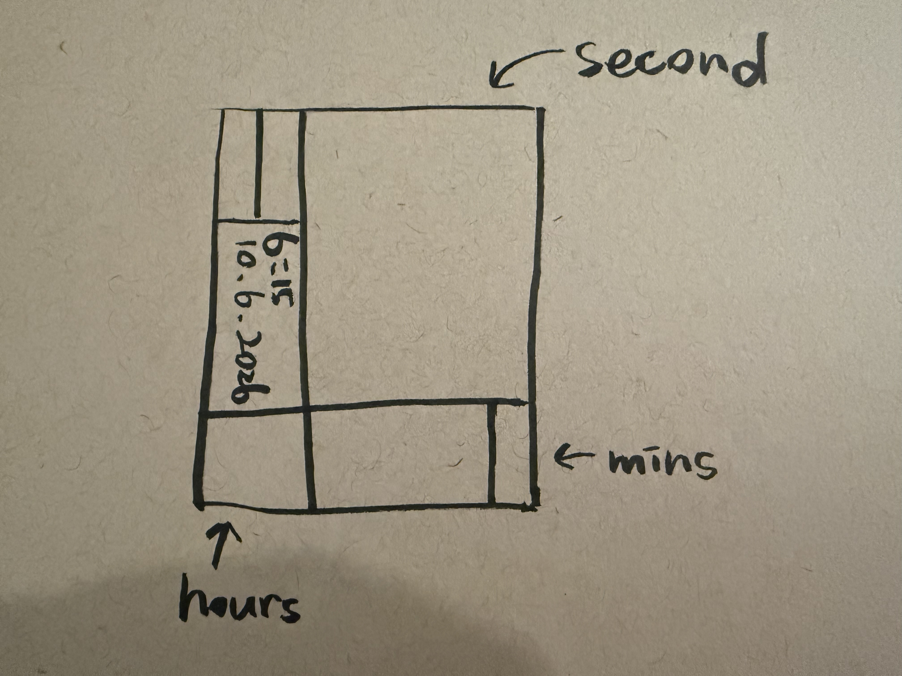
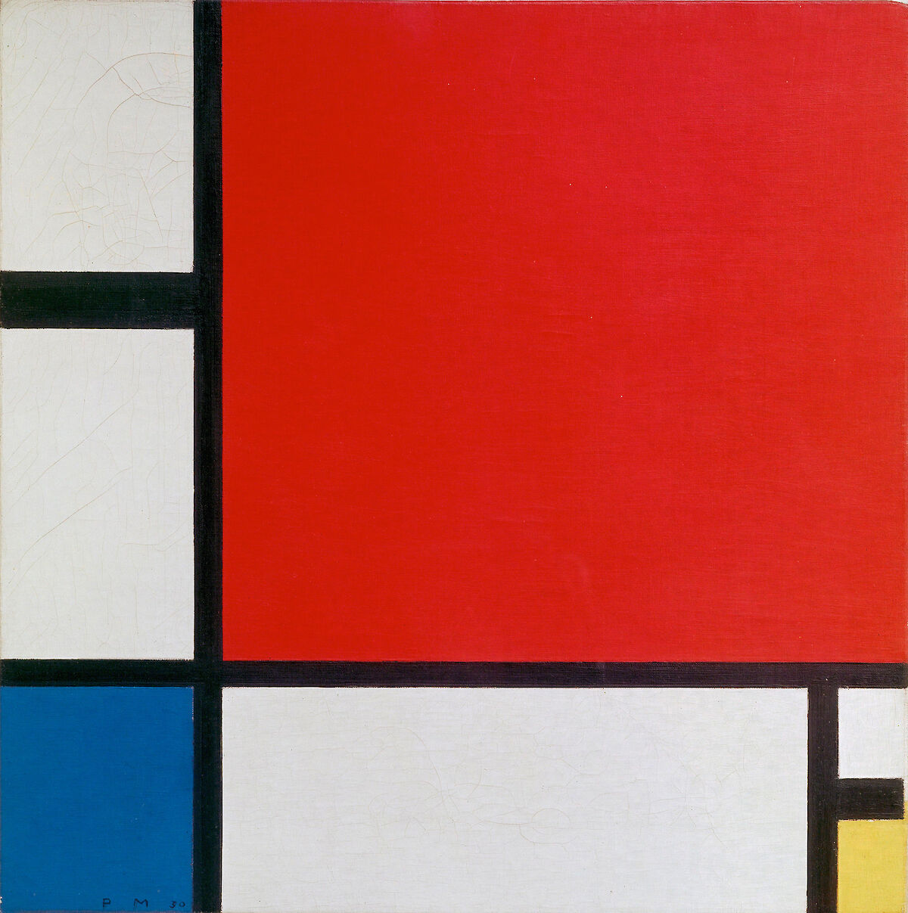
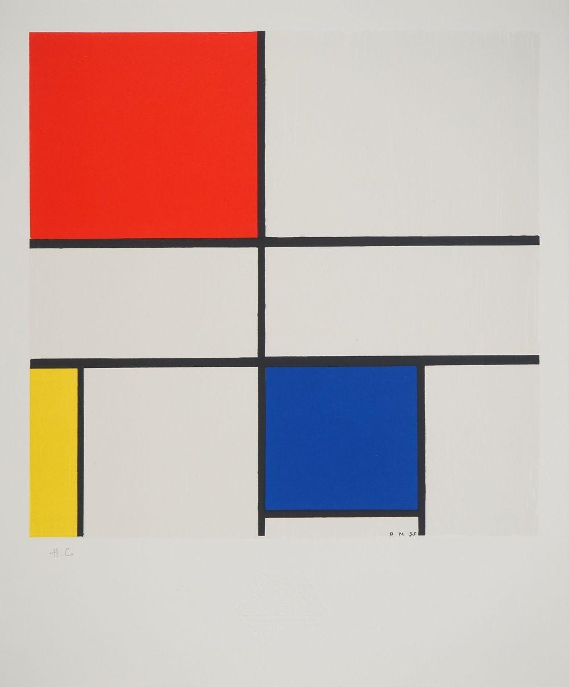

My work is titled Composition Clocks. It is an abstract clock piece inspired by Piet Mondrian’s Composition with Red, Blue, and Yellow. I retained the original work’s distinctive visual language. This includes the black horizontal and vertical lines, geometric color blocks, and the three primary colors of red, blue, and yellow. I adjusted the positions and sizes of some of the color blocks. This allows the composition to function as a clock while still maintaining the abstract feeling of the original work.
The three primary colors in the composition represent different units of time. The blue area in the upper right represents seconds. A new layer of rectangles appears every second. These rectangles continuously shrink inward. The blue also changes from light to dark and then back to light. The red area in the lower left represents the hours. It does not switch colors abruptly. Instead, it gradually transitions from dark red to light red throughout the day. The yellow area in the lower right represents the minutes. As the minutes increase, the yellow rectangle gradually grows from the bottom to the top. The text arranged vertically on the left displays the current time and date.
In the code, I first used hour, minute, and second to retrieve the current time. For the blue section, I used an array to group 16 shades of blue together. I then used a for loop to continuously draw new rectangles based on the current number of seconds. I also used colorIndex and if statements. Once the color reaches the darkest shade of blue, it gradually becomes lighter again. This creates a repeating cycle of color changes. The yellow section uses map to convert minutes from 0 to 60 into heights from 0 to 136. This allows the yellow rectangle to gradually grow upward as the minutes increase. The red section also uses map. I first convert the current hour and minutes into the number of minutes that have passed in the day. Then I convert 0 to 1440 minutes into a value from 0 to 1. This value is passed to lerpColor. It determines which color between dark red and light red should be displayed at that moment. I came across lerpColor in my instructor’s example while learning about lerp. I decided to use the same method in my own clock. This makes the change in the red area smoother and more continuous instead of suddenly switching between colors.


